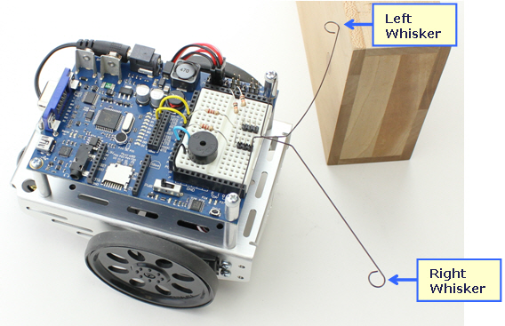

Whiskers¶
Whiskers are one of the components included in the robot kit. Whisker sensors allow the robot to detect obstacles when it bumps into them.
Whisker values are accessed via IN5 and IN7
| IN id | Whisker |
|---|---|
| IN5 | Left Whisker |
| IN7 | Right Whisker |
| Whisker State | Value |
|---|---|
| Unpressed | 1 |
| Pressed | 0 |
Example: Outputting values when pressed¶
1 2 3 4 5 6 7 8 9 10 11 12 13 14 15 16 17 18 | left_whisker VAR Bit
right_whisker VAR Bit
Main:
DO
left_whisker = IN5
right_whisker = IN7
IF (left_whisker = 0) AND (right_whisker = 0) THEN
DEBUG "Both Whiskers were pressed!"
ELSEIF (left_whisker = 0) THEN
DEBUG "Left Whisker was pressed!"
ELSEIF (right_whisker = 0) THEN
DEBUG "Right Whisker was pressed!"
ELSE
DEBUG "No Whiskers are pressed..."
ENDIF
LOOP
|
Example: Utilizing the whiskers¶
1 2 3 4 5 6 7 8 9 10 11 12 13 14 15 16 17 18 19 20 21 22 23 24 25 26 27 28 29 30 31 32 33 34 35 36 37 38 39 40 41 42 43 44 45 46 47 48 49 50 51 52 53 | left_whisker VAR Bit
right_whisker VAR Bit
pulse_count VAR Byte
Main:
left_whisker = IN5
right_whisker = IN7
DO
IF (left_whisker = 0) AND (right_whisker = 0) THEN
' Left and Right whiskers are pressed so we back up and make a U-turn by default
' A U-turn is just 2 left turns
GOSUB Back_Up
GOSUB Spin_Turn_Left
GOSUB Spin_Turn_Left
ELSEIF (left_whisker = 0) THEN
GOSUB Back_Up
GOSUB Spin_Turn_Right
ELSEIF (right_whisker = 0) THEN
GOSUB Back_Up
GOSUB Spin_Turn_Left
ELSE
' here the whiskers are NOT in contact with a wall so we pulse forward
GOSUB Pulse_Forward
ENDIF
LOOP
Pulse_Forward:
PULSOUT 13,850
PULSOUT 12,650
RETURN
Spin_Turn_Left:
FOR pulse_count = 0 TO 50
PULSOUT 13, 650
PULSOUT 12, 650
NEXT
RETURN
Spin_Turn_Right:
FOR pulse_count = 0 TO 50
PULSOUT 13, 850
PULSOUT 12, 850
NEXT
RETURN
Back_Up:
FOR pulse_count = 0 TO 50
PULSOUT 13, 650
PULSOUT 12, 850
NEXT
RETURN
|
Conclusion¶
Whiskers are a good way to detect obstacles in front of the robot. However, whiskers aren’t the best way to detect obstacles. There are some quirks of the whiskers bending in weird ways and which makes them less reliable. In the next section we will cover Infrared Sensors which offer much more in terms of depth perception and field of view (fov).